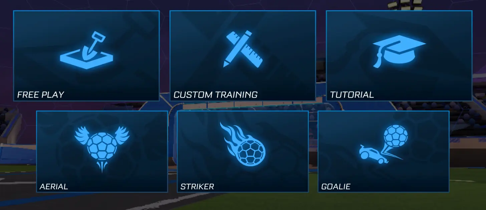

Turnaje
V turnajích můžete hrát proti nejlepším hráčům Vašeho ranku. Turnaje od tvůrce hry Psyonix se pořádají od 9-24 regionálního času.
Turnaje se pořádají jen v módech 3v3, 2v2, Rumble, Hoops a Snow Day a každé 2 hodiny se mění
Casual je série módů, kde se hraje bez ranku.
Najdete tu jak 3 klasické herní módy - 3v3, 2v2 a 1v1,
vyjímku 4v4 a následně 2 speciální hratelné jen týden - Dropshot a Heatseeker.
Každý týden se speciální módy obměňují.
Při klasických módech (4v4, 3v3, 2v2, 1v1) hrajete proti určitému počtu hráčů v týmu se svým týmem (ať už je Váš tým složen z náhodných lidí, nebo si k sobě do týmu (party) můžete pozvat až 3 další hráče). Cílem je dostat co nejvíce míčů do soupeřovy brány = gólů (celý míč musí být v bráně). Pokud mají oba týmy stejně gólů po 5 minutách hry, následuje nekonečné prodloužení které skončí jakmile jeden tým dá vítězný gól.
Heatseeker hrajete v týmech po 2, kde míč při odrazu od jedné půlky hřiště letí do brány na druhé půlce. Vaším úkolem je odrážet míč abyste nedostali gól. Míč se s každým odrazem zrychluje dokud nepadne gól. První tým, který skóruje 7 gólů vyhrál.
Aréna je dělena na 2 poloviny podle týmu, kde každá polovina má "skleněnou" podlahu.
Jakmile se míč dotkne podlahy, podle síly míče při dopadu se rozbije počet buněk v podlaze.
Síla míče s každým dotekem auta stoupá. Cíl hry je dostat celý míč do díry v soupeřově podlaze.
Do díry auta nemohou spadnout.
Competitive je série módů s rankem. Po každé hře získáte/ztratíte počet tzv. MMR. Na základě MMR získáváte rank a hrajete s hráči podobným MMR.
Klasické módy fungují úplně stejně jako v casual, zde je jediný rozdíl že hrajete o MMR.
Hřiště v zimním/modrém duchu. Místo trávy máte led a místo míče máte puk. Auta na ledě nekloužou ale puk ano.
Cílem je opět dostat celý puk do brány.
Hříště v oranžovém duchu. Místo trávy basketbalová podlaha. Cílem je dostat basketbalový míč do koše, jehož hranice je v určitý výšce.
Tým, který dá víc košů během 5 minut vyhrává.
Klasické i speciálně upravené hřiště. Máte k dispozici tzv. power-upy které se načítají 10 sekund než je můžete použít.
Po jejich použití získáte další (ale náhodný) power-up.
K vítězství potřebujete dát více gólů než soupeř a mohou vám pomoci ony power-upy.
V turnajích můžete hrát proti nejlepším hráčům Vašeho ranku. Turnaje od tvůrce hry Psyonix se pořádají od 9-24 regionálního času.
Turnaje se pořádají jen v módech 3v3, 2v2, Rumble, Hoops a Snow Day a každé 2 hodiny se mění
V soukromých zápasech lze nastavit několik věcí (herní mód, velikost týmů, síla gravitace a mnoho dalšího...)
Můžete se připojit k online soukromému zápasu pomocí jména a hesla nastavené zakladatelem soukromého zápasu.
Můžete také založit online soukromý zápas, LAN soukromý zápas či se k LAN zápasu připojit.
Rocket League offline mód umožňuje hrát proti oficiálním RL robotům.
Můžete zapnout a nastavit 1 zápas (Exhibice) nebo tzv. Sezónu kde vás čeká až 40 zápasů (lze hrát i online módy když jste zapnuli sezónu).
V exhibičním zápase můžete nastavit stejné nastavení jako v soukromém zápase.
V sezónním nastavení uvidíte tyto možnosti: velikost týmu, obtížnost, délka sezóny a počet týmů v play-off
Ve Free Play můžete dělat cokoliv.
Rocket League umožňuje následující zrychlenou manipulaci s míčem:
Resetovat míč na střed, nastavit míč před auto,
nastavit míč na střechu auta, přihrát míč, vystřelit míč do vzduchu, vystřelit míč na nejbližší bránu
V Custom Tréninku máte nabídku několika custom tréninků na vše, od začátky střílení na bránu po flip resety nebo musty shoty.
Můžete si custom trénink označit jako oblíbený abyste ho měli vždy po ruce v záložce Oblíbené.
Rocket League pravidelně zveřejňuje svoje custom tréninky pro každý rank kam dává takové mechaniky,
které by měl průměrný hráč v ranku zvládat.
Název doufám mluví sám za sebe. Jednoduše tutoriál jak ovládat auto a nejzákladnější věci, které tu již byly vypsány.
Kdyby i přesto někdo zapomněl, základní mechaniky si můžete přečíst zde.
Tyto 3 tréninky mají naprosto stejné možnosti (Rookie, Pro, All-Star), proto jsou i pod 1 nadpisem
V Aerial tréninku se snažíte skórovat v letu. V Striker tréninku se snažíte skórovat ze země. V Goalie se snažíte "chytit" (odrazit) míč aby neskončil ve Vaší bráně.
